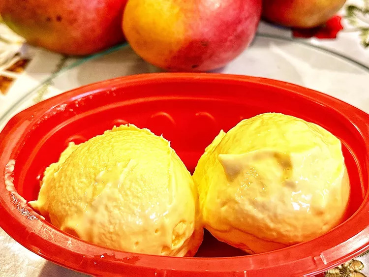

3 Ingredient Mango Ice Cream

Description
This 3 ingredient mango ice cream is no-churn and can be made in an ice cream maker
or just poured into a freezer safe container. How easy can it get?
Ingredients
- 1.5 cups mango puree
- 1 cup heavy cream
- 0.5 cup sugar
Directions
- Peel and dice mangoes. Place in a blender and blend until pureed; measure out 1.5 cups puree; set aside. Refrigerate remaining puree for another use
- Whip heavy cream and sugar with an electric mixer on high speed until soft peaks form. Reduce the mixer speed to low and mix in mango purer.
- Pour into a freezer-safe bowl. Freeze for 8 hours to overnight if freezing in a container.
- Remove from the freezer and let sit for 8 to 10 minutes or until soft enough to scoop.